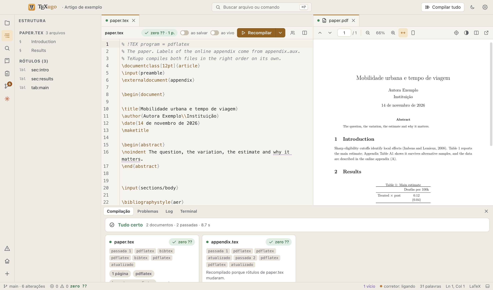
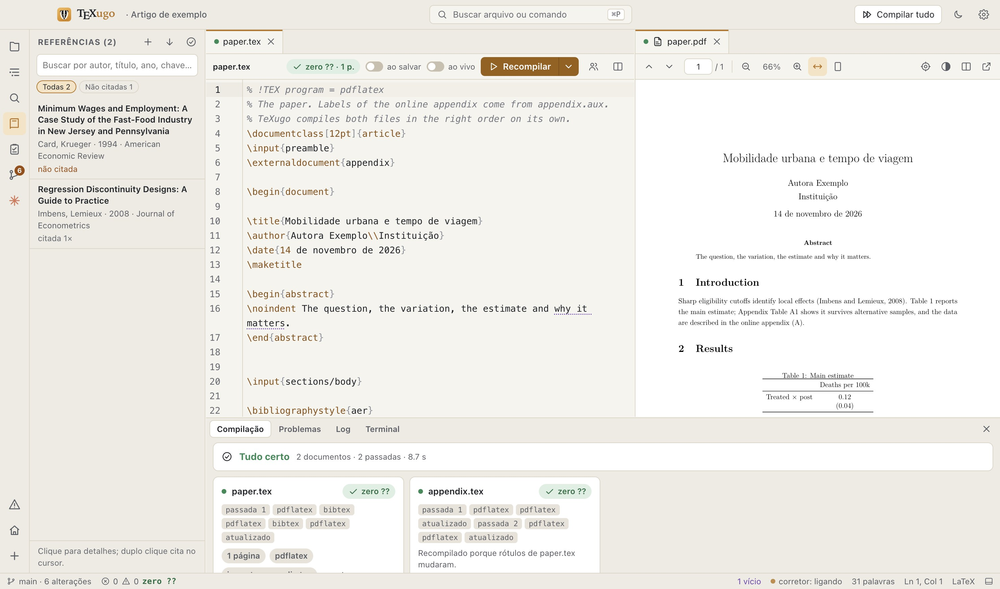
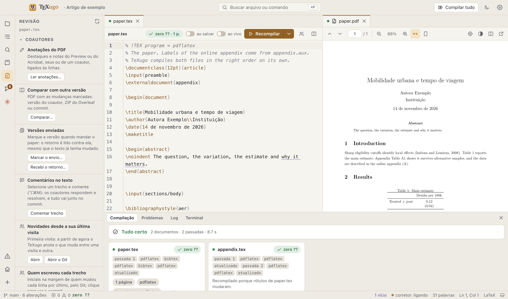
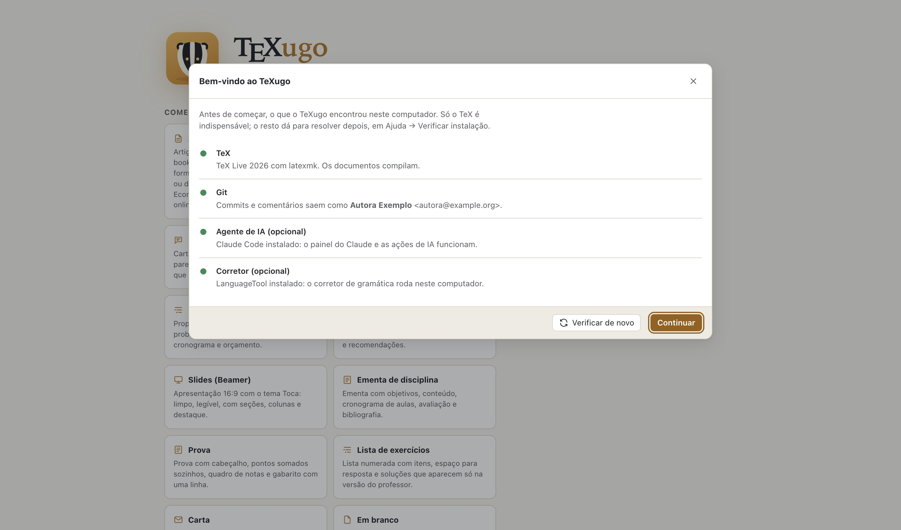

TeXugo
Editor LaTeX local. Várias abas, cada uma com o seu botão Compilar, e um PDF sem ??.
A local LaTeX editor. Many tabs, each with its own Compile button, and a PDF with no ??.
- Os arquivos ficam no seu computador e a compilação usa o seu TeX.
- Cada
??vem com o motivo; projetos com\externaldocumentcompilam na ordem certa. - Git com coautores: sincronizar num clique, comentários no texto, o que mudou desde a sua última visita.
- Revisão: parecer, resposta aos pareceristas, ZIP de submissão que compila sozinho, pacote de replicação.
- Your files stay on your computer and builds use your own TeX.
- Every
??comes with its reason; projects with\externaldocumentbuild in the right order. - Git with coauthors: one-click sync, comments in the text, what changed since your last visit.
- Review: referee reports, responses to referees, a submission ZIP that compiles on its own, a replication package.
BaixarDownload
Procurando a versão mais recente…Looking for the latest version…
Todas as versões: All versions: GitHub Releases. No Mac, para saber o chip: menu Apple → Sobre Este Mac.On a Mac, to see the chip: Apple menu → About This Mac.
O TeXugo em usoTeXugo in use






Primeira aberturaFirst launch
O TeXugo é gratuito e não tem assinatura paga da Apple nem da Microsoft. Por isso o sistema pergunta uma vez, na primeira abertura de cada versão.
TeXugo is free and is not signed with a paid Apple or Microsoft certificate, so the system asks once, the first time each version opens.
Mac
- Abra o
.dmge arraste o TeXugo para Aplicativos. - Abra o TeXugo. O macOS avisa que não pode verificar o app; clique em OK.
- Vá a Ajustes do Sistema → Privacidade e Segurança, desça até a mensagem sobre o TeXugo e clique em Abrir Mesmo Assim. Confirme com a sua senha.
- Open the
.dmgand drag TeXugo to Applications. - Open TeXugo. macOS says it cannot verify the app; click OK.
- Go to System Settings → Privacy & Security, scroll to the message about TeXugo and click Open Anyway. Confirm with your password.

Windows
Ao rodar o instalador, o SmartScreen mostra "O Windows protegeu o computador". Clique em Mais informações e depois em Executar assim mesmo. A instalação é só para o seu usuário e não pede administrador.
When you run the installer, SmartScreen shows "Windows protected your PC". Click More info, then Run anyway. It installs for your user only and does not ask for an administrator.
Linux
Torne o arquivo executável (chmod +x TeXugo-*.AppImage) e abra-o.
Make the file executable (chmod +x TeXugo-*.AppImage) and open it.
RequisitosRequirements
- TeX: MacTeX no Mac, TeX Live ou MiKTeX no Windows, TeX Live no Linux. Indispensável.
- Git, para versões e coautores. Opcional.
- Claude Code, para as ações de IA. LanguageTool, para o corretor. Opcionais.
- TeX: MacTeX on a Mac, TeX Live or MiKTeX on Windows, TeX Live on Linux. Required.
- Git, for versions and coauthors. Optional.
- Claude Code, for the AI actions. LanguageTool, for the checker. Optional.
Na primeira abertura, o TeXugo mostra o que encontrou e o que falta.
On first launch, TeXugo shows what it found and what is missing.